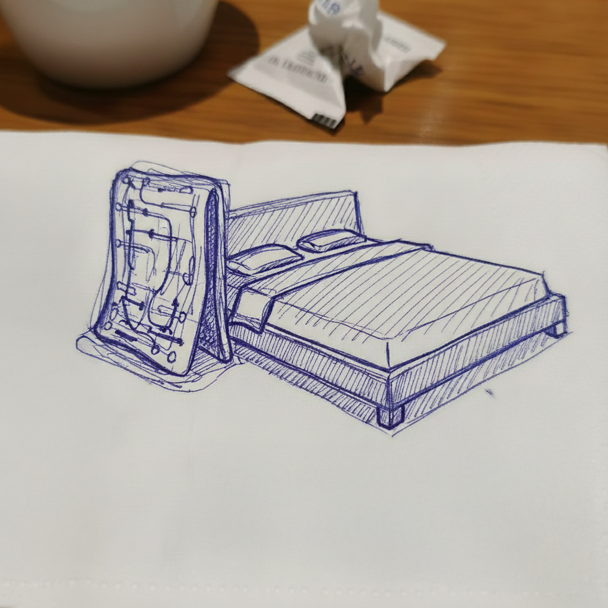
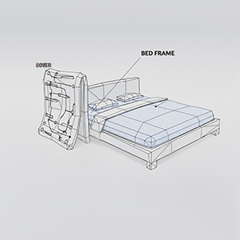
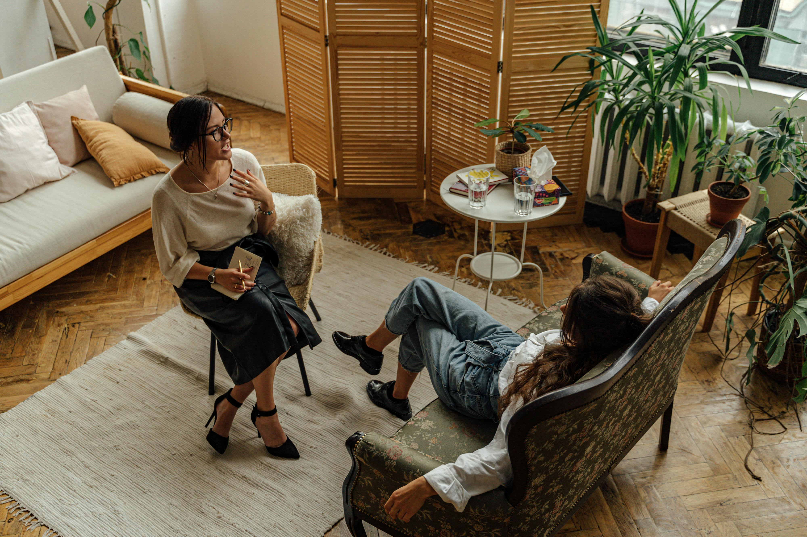
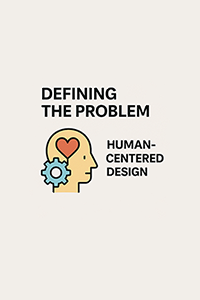
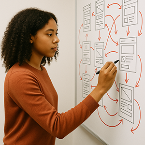
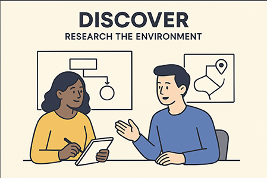
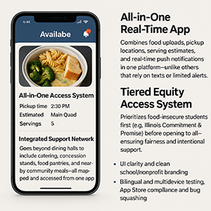

The Problem
For people with depression, the bed can become a clutch to cope when wanting to avoid overrbearing duties. People nearest to you can try to simplify it by saying "just get up earlier" ignoring the neurological reality: executive dysfunction makes even basic tasks feel insurmountable. When you combine the dread with obnoxious 'alarm clocks' it becomes easy to treat waking up as a willpower issue. It's not. It's a design issue. My objective is to make getting up an enjoyable and simplified process.
User Research
- Interview individuals with depression to understand how executive dysfunction affects their morning routines, sensory triggers, and emotional responses to alarms
- Observe night routine to understand what other contirbuting factors may lead to snoozing the alarm
- Observe how many times the snooze occurs and what would be potential motivating factors
Design Process
Sketch Phase

Quick drawing to explore what could make waking up feel less overwhelming. I focused on simple shapes, that require minimal effort. These early sketches helped me visualize how the product could support someone emotionally and physically.
Model

I turned the sketches into basic 3D forms to understand size, placement, and usability.
Material Research

Exploring what materials may be needed and specific technology that may need to be used and comparing with previous competitiors.
Next Steps
My next steps focus on user testing to gather feedback from people who experience morning depression or executive dysfunction. I will refine the design based on their needs, adjusting form, interaction, and materials to ensure the final product genuinely supports a smoother, more compassionate morning routine.
The Problem
Mental health care costs $60-120/month even with insurance, making it unaffordable for many families. MHB (Mental Health Bear) is an accessible alternative that combines a physical companion with an app offering evidence-based emotional support, journaling, and crisis detection.
User Research
- Interview 15-20 users (parents, teens, therapy-gap individuals) about cost barriers and when they need support most
- Survey 100+ people on therapy costs, frequency of need, and what interventions they'd actually use
- Shadow users during real stress moments to understand emotional needs beyond what they can articulate in interviews
- Analyze competitor apps (Woebot, Wysa, Youper) to identify gaps in crisis response and user trust
- Consult 3-5 licensed therapists on ethical boundaries to see when AI can help vs. when human care is non-negotiable
Design Process
EMPATHIZE

Interview users about therapy barriers.
Create journey maps of their mental health struggles.
DEFINE

Synthesize insights into problem statement.
Frame "How Might We" questions.
IDEATE

Sketch concepts for bear/app interaction Storyboard user scenarios.
Develop paper mock ups of bear and app model.
PROTOTYPE

Example of CAD model for mental health bear.
TEST & ITERATE

Observe users interacting with the prototype, identify pain points, and collaborate with both the therapist and students.
The Problem
Many students experience food insecurity while edible surplus food exists across campus. Because current systems for sharing extra food are inconsistent and disconnected, students who need support often miss out. Communication is scattered, access is unpredictable, and volunteer coordination is unclear. The result is preventable hunger and unnecessary waste. There is a need for a centralized, student-centered, dignity-focused way to connect available food with those who need it most.
User Research
- Understand when and why students encounter food insecurity, their comfort levels accessing help, and how they currently navigate supportive resources
- Explore how surplus food typically gets discarded across different university environments
Design Process
Discover

Through observation and conversations, we learn how students currently find food support, where barriers appear, and how surplus food generally circulates. The goal is to uncover patterns, emotional experiences, and unmet needs.
Define

Once the issue is defined, we bring insights together to highlight shared themes across stakeholders.
Design

Broad ideas are sketched, tested, and reshaped into early concepts. Focus is placed on accessibility, dignity, clarity, and reducing friction. Multiple formats are tried so stakeholders can compare approaches and share feedback without locking into any specific system or method.
Deliver
Concepts are tested with students and volunteers to examine clarity, comfort, and usability. Feedback informs iterations that strengthen the design. This step ensures the final direction is grounded in real needs while staying flexible for future operational decisions.